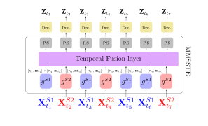
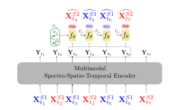
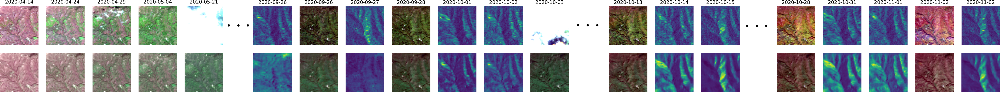
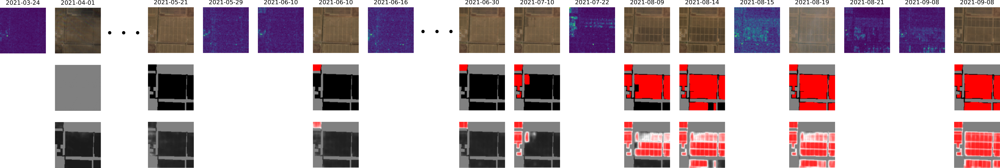
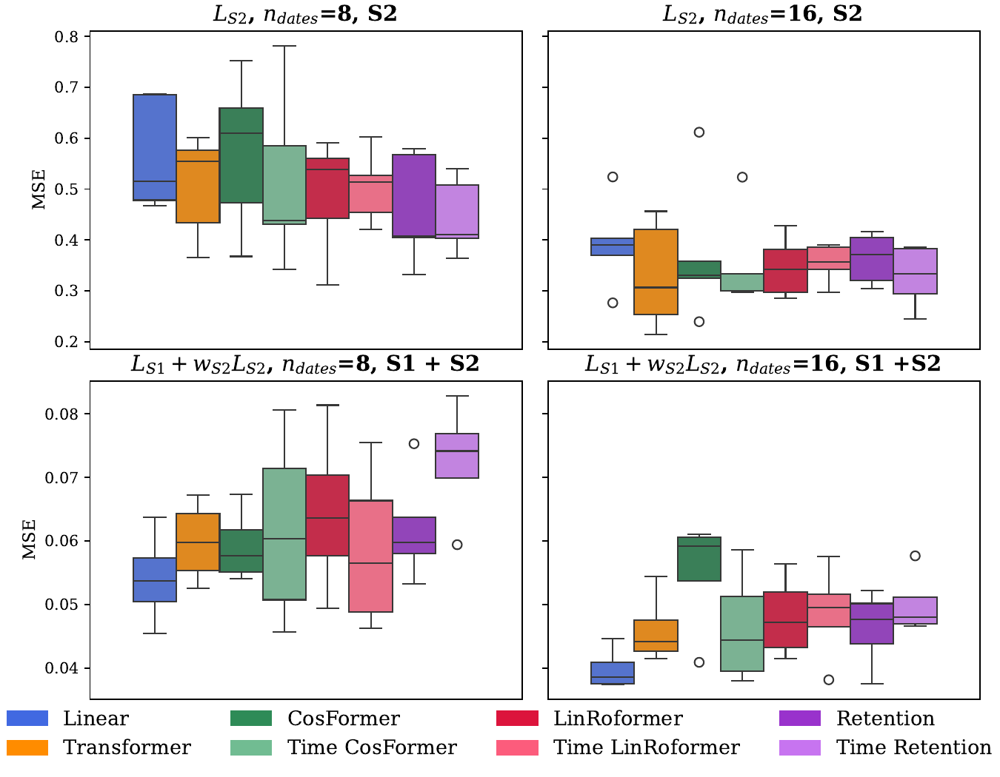
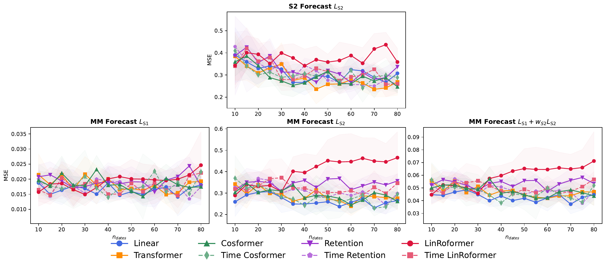

Multi-modal Satellite Image Time Series (SITS) analysis faces significant computational challenges for live land monitoring applications. While Transformer architectures excel at capturing temporal dependencies and fusing multi-modal data, their quadratic computational complexity and the need to reprocess entire sequences for each new acquisition limit their deployment for regular, large-area monitoring.
This paper studies various dual-form attention mechanisms for efficient multi-modal SITS analysis, that enable parallel training while supporting recurrent inference for incremental processing. We compare linear attention and retention mechanisms within a multi-modal spectro-temporal encoder. To address SITS-specific challenges of temporal irregularity and unalignment, we develop temporal adaptations of dual-form mechanisms that compute token distances based on actual acquisition dates rather than sequence indices.
Our approach is evaluated on two tasks using Sentinel-1 and Sentinel-2 data: multi-modal SITS forecasting as a proxy task, and real-world solar panel construction monitoring. Experimental results demonstrate that dual-form mechanisms achieve performance comparable to standard Transformers while enabling efficient recurrent inference. The multi-modal framework consistently outperforms mono-modal approaches across both tasks, demonstrating the effectiveness of dual mechanisms for sensor fusion.
$X$ is a sequence composed of $N$ tokens $(\mathbf{x}_j)_{1 \leq j \leq N}$,
$\q{i} = \mathbf{x}_i \cdot W_Q$, $\k{j} = \mathbf{x}_j \cdot W_K$, $\mathbf{v}_i = \mathbf{x}_i \cdot W_V$
$$\mathbf{o}_i = \sum_{j=1}^i a_{i,j} \mathbf{v}_j$$
$$a_{i,j} = \frac{\text{s}(\q{i}, \k{j})}{\sum_{j=1}^i \text{s}(\q{i}, \k{j})}$$
Kernel-based attention mechanisms:
$$\text{s}(\q{i}, \k{j}) = \phi(\q{i}) \cdot \phi(\k{j})^T$$
$$a_{i,j} = \gamma^{i-j} \phi^{\text{ret}}(\q{i}) \cdot \phi^{\text{ret}}(\k{j})^T$$
| Attention mechanism | Similarity function $\text{s}(\mathbf{q}_i,\mathbf{k}_j)$ |
|---|---|
| Transformer [Vaswani et al., 2017] | $\exp\!\left(\dfrac{\mathbf{q}_i \cdot \mathbf{k}_j}{\sqrt{d_K}}\right)$ |
| Linear Transformer [Katharopoulos et al., 2020] | $\left(1+\text{elu}(\mathbf{q}_i)\right)\cdot \left(1+\text{elu}(\mathbf{k}_j)\right)^T$ |
| CosFormer [Qin et al., 2022] | $\cos\!\left(\dfrac{\pi}{2} \cdot \dfrac{i-j}{M}\right)\psi(\mathbf{q}_i)\cdot\psi(\mathbf{k}_j)^T$ |
| RoPE Linear Transformer [Su et al., 2024] | $(\psi(\mathbf{q}_n) R_{i\boldsymbol{\theta}})(\psi(\mathbf{k}_m) R_{j\boldsymbol{\theta}})^T$ |
The proposed Multi-Modal Spectro-Spatio-Temporal Encoder (MMSSTE) integrates dual-form attention mechanisms for efficient processing of Sentinel-1 and Sentinel-2 satellite time series.

We compare several dual-form attention mechanisms:
Additionally, we propose temporal variants (Time CosFormer, Time LinRoFormer, Time Retention) that compute distances based on actual acquisition dates rather than sequence indices, addressing SITS temporal irregularity.
We evaluate dual-form mechanisms on a forecasting task where the model predicts the next satellite acquisition given past observations.


Multi-modal approaches consistently outperform mono-modal baselines on real-world construction monitoring.

Dual-form mechanisms achieve comparable performance to standard Transformers while enabling efficient recurrent inference.

Models generalize well to longer sequences than seen during training, with temporal variants showing better adaptation.

@article{dumeur2026dualform,
title={Comparative analysis of dual-form networks for live land monitoring
using multi-modal satellite image time series},
author={Dumeur, Iris and Anger, J{\'e}r{\'e}my and Facciolo, Gabriele},
journal={ISPRS},
year={2026}
}
This work was financed by the Agence Innovation Défense (AID), within the framework of the Dual Innovation Support Scheme (RAPID - Régime d'APpui à l'Innovation Duale), for the project 'DETEVENT' (Agreement No. 2024 29 0970).
This work was granted access to the HPC resources of IDRIS under the allocations 2025-AD011016513 and 2025-AD011012453R4 made by GENCI.
Sentinel-1 and Sentinel-2 data is from Copernicus. This paper contains modified Copernicus Sentinel data.